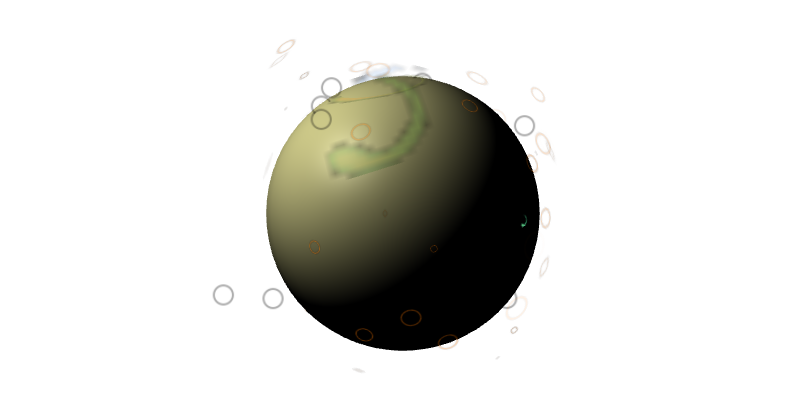
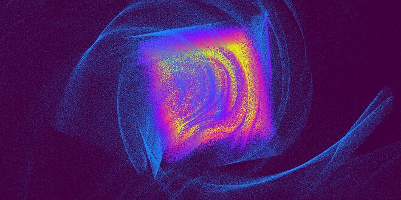
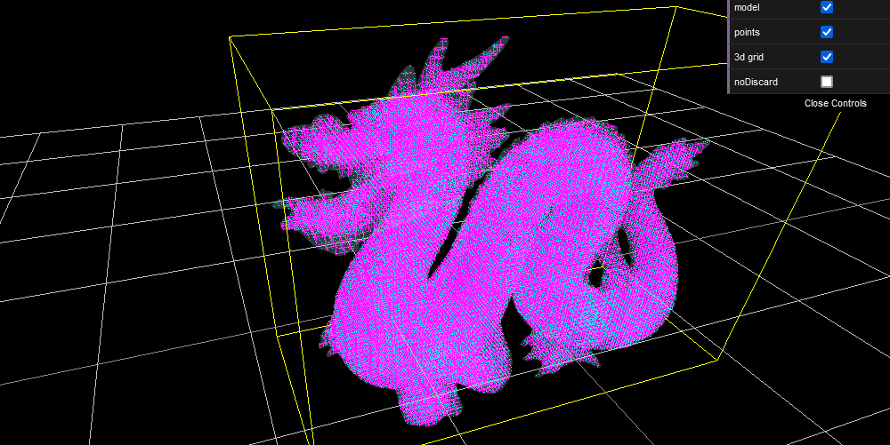
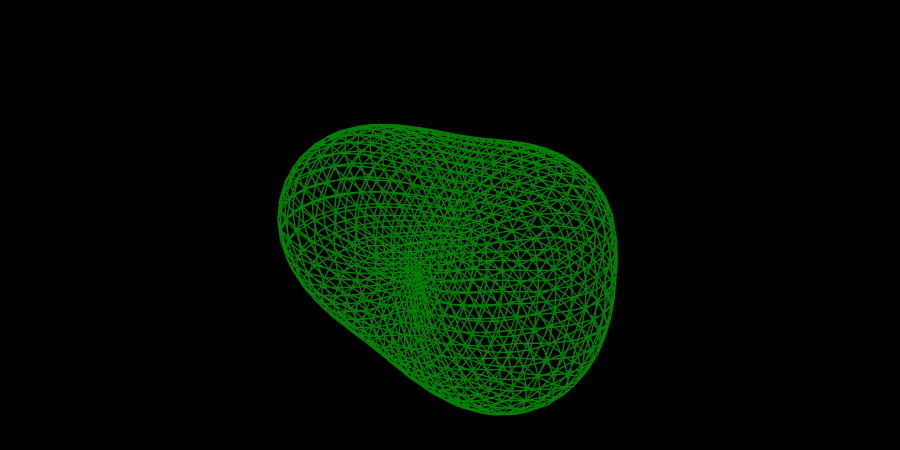

OnScreenJoysticks - @author HoraceShmorace >>> discourse.threejs.org
FillModel(shader) - @author prisoner849 >>> discourse.threejs.org
 RotatePoints(shader) - @author chaserboy Chaser_Code >>> discourse.threejs.org
GeneratingDisposingObjects - @author HoraceShmorace >>> discourse.threejs.org
 ShakeCameraOnImpact
- @author HoraceShmorace
>>>
discourse.threejs.org
ShakeCameraOnImpact
- @author HoraceShmorace
>>>
discourse.threejs.org
lightingPropertiesShader Material - @author Nemines + Mugen87 >>> discourse.threejs.org
LatheBufferGeometryFaceNormals, - @author prisoner849 >>> discourse.threejs.org
MaterialSheen - @author Mugen87 >>> discourse.threejs.org
LowpolyTerrainEndlessWay - @author cywarr = prisoner849 >>> discourse.threejs.org
SelectiveBloom(emissiveMap) - @author cywarr = prisoner849 >>> discourse.threejs.org
VolumetricLightEffect - @author cywarr = prisoner849 >>> discourse.threejs.org
ViewCube3d - @author fennec-hub >>> discourse.threejs.org
DistortIcosahedron(noise) - @author prisoner849 >>> discourse.threejs.org
MappingFidelity - @author Chrisssie vielzutun.ch >>> discourse.threejs.org
NestedObjectsTween - @author prisoner849 >>> discourse.threejs.org
SelectiveBloom - @author prisoner849 >>> discourse.threejs.org
 GPGPU-ParticlesAndTheBox - @author prisoner849 >>> discourse.threejs.org
 DatTexture3D_mesh-bvh - @author prisoner849 >>> discourse.threejs.org
Draw&FillContours(SVG) - @author prisoner849 >>> discourse.threejs.org
 Sand Nefertiti_mesh-bvh
- @author prisoner849
>>>
discourse.threejs.org
Sand Nefertiti_mesh-bvh
- @author prisoner849
>>>
discourse.threejs.org
ObjectOfPointsRaycaster - @author prisoner849 >>> discourse.threejs.org
ShatteredNefertiti - @author prisoner849 >>> discourse.threejs.org
BlueTonePostprocessing - @author prisoner849 >>> discourse.threejs.org
MergedMeshVertexColor - @author orion_prime >>> discourse.threejs.org
PhysicallyCorrectLights - @author seanin + gorskidev >>> discourse.threejs.org
RoundedRectangleVideo - @author Lighty + orion_prime >>> discourse.threejs.org
RaycasterAndLayer - @author seanin + Mugen87 >>> discourse.threejs.org
OrbitControls_CustomJoystick - @author espace3d >>> discourse.threejs.org & discourse.threejs.org
ApplyUVs - @author mmalex >>> discourse.threejs.org
ConnectLines - @author Yongs + Mugen87 >>> discourse.threejs.org
LoadingObjectModal - @author drcmda (forked) >>> discourse.threejs.org
 GeometryFromArrayOfIntersectedFaces
- @author forerunrun
>>>
discourse.threejs.org
GeometryFromArrayOfIntersectedFaces
- @author forerunrun
>>>
discourse.threejs.org
ChangeLineWidth(Shader) - @author prisoner849 >>> discourse.threejs.org
BlenderLikeOrientation - @author Fennec >>> discourse.threejs.org
Raycasting_mesh-bvh - @author gkjohnson >>> discourse.threejs.org
 PerlinNoiseBlob - @author Tim + prisoner849 >>> discourse.threejs.org
WobblyTorus - @author Stefan Gustavson + prisoner849 >>> discourse.threejs.org
ProceduralFish - @author prisoner849 >>> discourse.threejs.org
CurveGenerator - @author sneha-belkhale >>> discourse.threejs.org
ModelAnimation - @author LA21 + Mugen87 >>> discourse.threejs.org
threejs-GSAP - @author Mugen87 >>> discourse.threejs.org
CylinderByElements - @author prisoner849 >>> discourse.threejs.org see also periodic table
HTMLinputOnCube - threeml.org - @author awonnink >>> discourse.threejs.org
LightNoiseSselectiveBloom - @author prisoner849 >>> discourse.threejs.org
MultipleScenesWithRenderPass - @author rocket5tim + drcmda >>> discourse.threejs.org
GlobalImpacts(waves+trails) - @author prisoner849 >>> discourse.threejs.org
InteractiveParticlesText - @author sanprieto >>> discourse.threejs.org
r125MergeVertices - @author marcofugaro + Mugen87 >>> discourse.threejs.org
WaveOverSphereShader - @author prisoner849 >>> discourse.threejs.org
YoyoAnimationTween - @author espace3d >>> discourse.threejs.org
ProtonParticles - @author sporkmilk + Mugen87 >>> discourse.threejs.org
ScreenPositionAccuracyShader - @author Natch >>> discourse.threejs.org
FogEffect - @author Mugen87 >>> discourse.threejs.org
 SaveScreenshot
- @author Mugen87
>>>
discourse.threejs.org
SaveScreenshot
- @author Mugen87
>>>
discourse.threejs.org